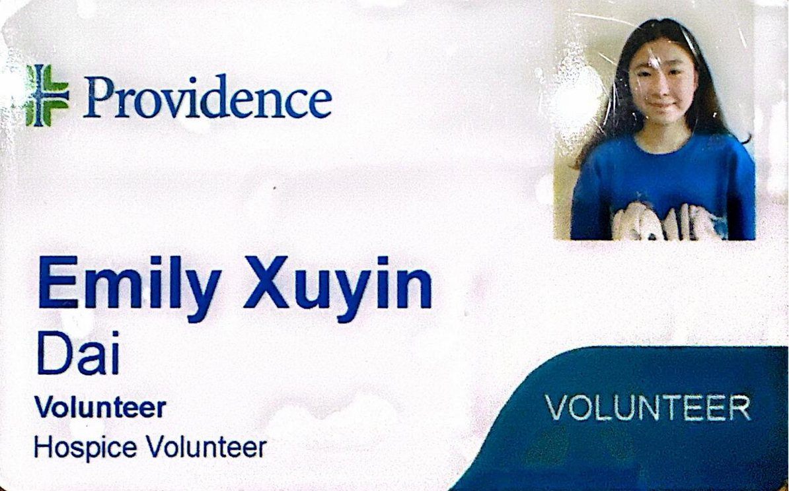
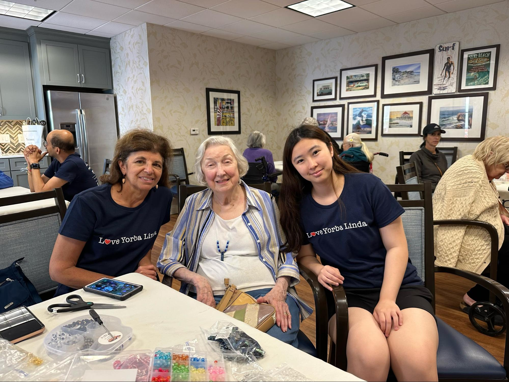

Providence Hospice
I assisted with both patient care and administrative tasks, gaining firsthand experience in a healthcare environment.
- Prepared first aid and blood draw kits, organized medical inventories, and archived patient profiles.
- Provided direct support and companionship to patients, offering emotional care alongside staff.
- Developed skills in empathy, teamwork, and organization to help deliver compassionate healthcare.




Sunrise Senior Living
I volunteered weekly to engage with residents, offering companionship and emotional support through music, conversation, and creative activities.
- Played piano during meals and organized activities like story reading and bracelet-making.
- Volunteered full-time during summer breaks, helping prepare meals, clean dining areas, and assist staff with daily routines.
- Planned and participated in holiday events, learning how small acts of kindness can improve residents’ well-being.